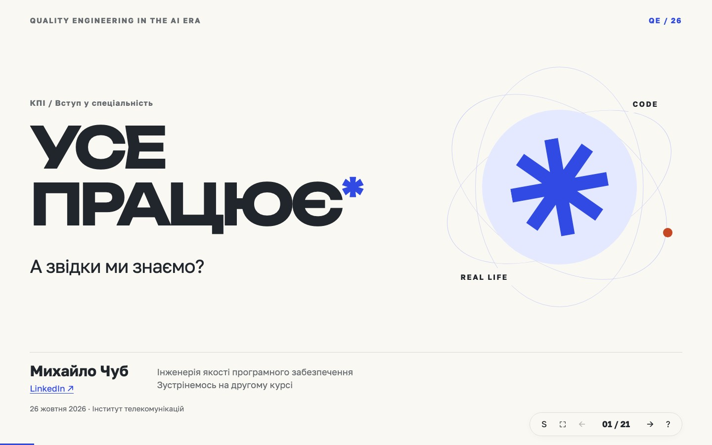

Інженерія
якості
Презентації до лекцій про якість програмних продуктів, дослідницьке мислення та роботу з AI.
Усе працює*
Від підтвердження на екрані до довіри в реальному світі. Як змінюється професія Quality Engineer в епоху AI.
Відкрити презентацію
